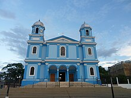
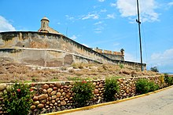

Cumaná es una ciudad venezolana, capital y sede de los poderes públicos del estado Sucre, Venezuela. Está ubicada en la entrada del Golfo de Cariaco, junto a la desembocadura del río Manzanares. Actualmente posee una población de 470 848 habitantes, que al sumarle los de las localidades aledañas de El Peñón, Cantarrana, El Tacal, San Juan de Macarapana y otras poblaciones cercanas, forma una conurbación con un total de 495.442 que integran el Área metropolitana de Cumaná, distribuidos en 598 km² de superficie; se encuentra en la Región Nor-Oriental del país. Es la capital del Estado Sucre y centro de la región oriental. Desde el 3 de julio de 1591 recibe expresamente título de ciudad, con privilegio de escudo de armas. La ciudad de Cumaná también ha sido conocida como «La Capital Mundial De La Cultura» y «La Atenas venezolana».
Turismo
Basílica de Santa Inés
Es la más antigua de la ciudad. Restaurada hacia 1853, esta iglesia está ubicada en el barrio de San Francisco, justo al lado de las ruinas del Castillo de Santa María de La Cabeza. Cabe destacar que la iglesia de Santa Inés no fue la primera en ser construida; la Iglesia de Nuestra Señora del Carmen, la cual se ubicaba entre los dos castillos de Santa María y de San Antonio, fue construida poco después del Asiento Colonial. Esta iglesia fue la primera Catedral de la ciudad, conserva el título de concatedral.
Castillo de San Antonio de la Eminencia
San Antonio de la Eminencia es un castillo colonial construido en el siglo xvii por la monarquía española en Cumaná, Venezuela, para proteger la ciudad de los constantes ataques de los piratas ingleses, franceses y holandeses. Originalmente llamado Careacus, su construcción comenzó alrededor de 1659. La fortaleza se sometió a varias remodelaciones debido a los daños causados por los violentos terremotos que han sacudido a la ciudad en los últimos siglos. Una fortaleza de menor importancia se construyó en 1668; Don Juan de Urtarte, gobernador de la Provincia de Cumaná, solicitó la fortificación de la estructura en 1670.